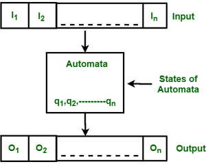
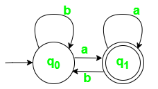
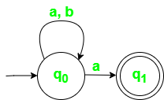

Finite Automata(FA) is the simplest machine to recognize patterns.It is used to characterize a Regular Language, for example: /baa+!/.
Also it is used to analyze and recognize Natural language Expressions. The finite automata or finite state machine is an abstract machine that has five elements or tuples. It has a set of states and rules for moving from one state to another but it depends upon the applied input symbol. Based on the states and the set of rules the input string can be either accepted or rejected. Basically, it is an abstract model of a digital computer which reads an input string and changes its internal state depending on the current input symbol. Every automaton defines a language i.e. set of strings it accepts. The following figure shows some essential features of general automation.

The above figure shows the following features of automata:
1.Input
2.Output
3.States of automata
4.State relation
5.Output relation
A Finite Automata consists of the following:
Formal specification of machine is
FA is characterized into two types:
In a DFA, for a particular input character, the machine goes to one state only. A transition function is defined on every state for every input symbol. Also in DFA null (or ?) move is not allowed, i.e., DFA cannot change state without any input character.
For example, construct a DFA which accept a language of all strings ending with ‘a’.
Given: ? = {a,b}, q = {q0}, F={q1}, Q = {q0, q1}
First, consider a language set of all the possible acceptable strings in order to construct an accurate state transition diagram.
L = {a, aa, aaa, aaaa, aaaaa, ba, bba, bbbaa, aba, abba, aaba, abaa}
Above is simple subset of the possible acceptable strings there can many other strings which ends with ‘a’ and contains symbols {a,b}.

Strings not accepted are,
ab, bb, aab, abbb, etc.
State transition table for above automaton,
| ?State\Symbol? | a | b |
|---|---|---|
| q0 | q1 | q0 |
| q1 | q1 | q0 |
One important thing to note is, there can be many possible DFAs for a pattern. A DFA with a minimum number of states is generally preferred.
As you can see in the transition function is for any input including null (or ?), NFA can go to any state number of states. For example, below is an NFA for the above problem.
